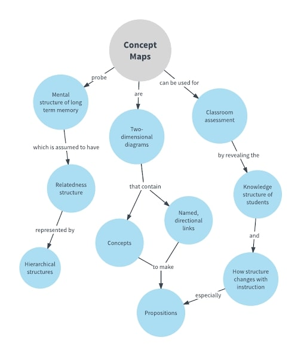

This method uses a main topic, which branches out into multiple subtopics of the main topic, and then into supporting details of those subtopics. This method can also use a visual style to help learners.
It is good for visual learners to use this method, as you can add graphics to your information, and is also a good way to organize the concepts that you have learned. This method is very rarely used with a live class, as it is very time consuming to do.